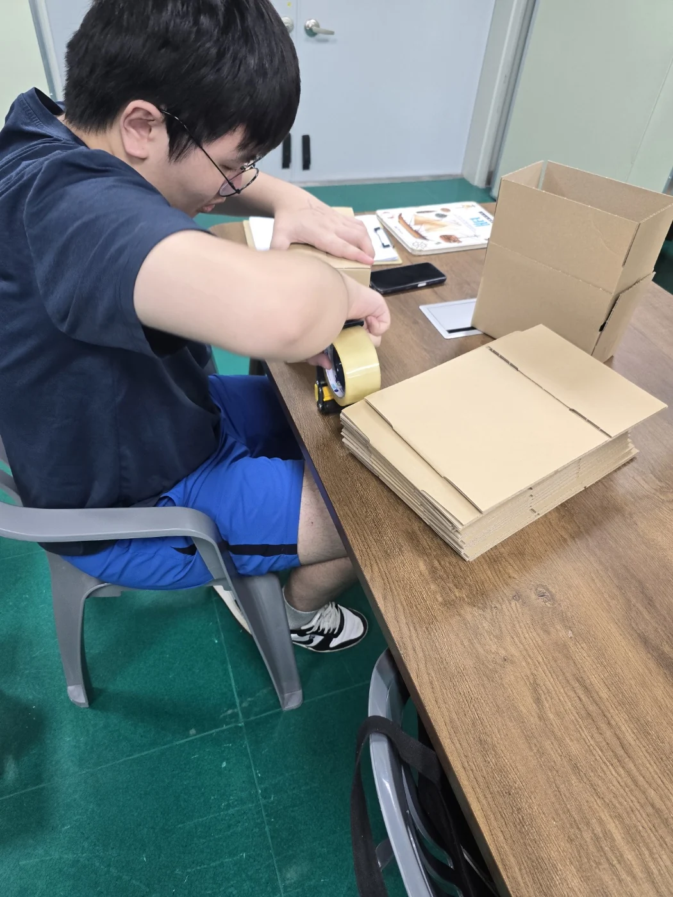

기업·기관용 문화 굿즈
태장에서 그린 민화를 바탕으로 기업·기관의 용도에 맞는 달력, 카드, 기념품을 만듭니다. 근로자들은 도안 채색부터 완성품 검수와 포장까지 작업 과정에 참여합니다.
태장은 장애인 근로자가 강점을 살려 일할 수 있도록 작업을 나누고 일하는 방식을 맞춥니다. 민화를 그려 문화 굿즈를 만들고, 기업 물품을 포장하고 검수합니다. 지역 환경정비와 테라리움 제작 교육도 이어가고 있습니다.
태장에서 그린 민화를 바탕으로 기업·기관의 용도에 맞는 달력, 카드, 기념품을 만듭니다. 근로자들은 도안 채색부터 완성품 검수와 포장까지 작업 과정에 참여합니다.

공원 등 지역 현장에서 환경정비 활동을 진행해 왔습니다. 활동 전에는 현장 여건을 확인하고 안전 수칙을 안내합니다. 기업·기관과는 지역에 필요한 활동과 함께할 수 있는 범위를 살펴봅니다.

자재 준비부터 상자 포장, 수량 확인, 최종 검수까지 정해진 순서에 따라 작업합니다. 기업에 필요한 물품과 그 밖의 반복 업무도 품목과 물량, 일정을 확인해 협력 방식을 논의합니다.

유리 용기에 식물을 심어 테라리움을 만드는 법과 식물을 관리하는 법을 익히고 있습니다. 이 과정을 바탕으로 맞춤 주문제작 상품과 DIY 키트를 준비하고 있습니다.
필요한 업무, 예상 수량, 희망 일정과 작업 장소를 알려주세요.
태장이 맡을 수 있는 작업과 일정을 확인하고 수행 범위를 정합니다.
정해진 범위에 맞춰 작업 순서와 역할, 검수 기준을 협의합니다.
합의한 방식으로 작업하고, 정한 기준에 따라 결과를 확인합니다.
태장의 이전 본점이 있던 창원시 마산합포구 진전면의 약 1만 평 농장입니다. 농업 기반을 이어가기 위해 일부 공간부터 단계적으로 개발하고 있습니다.
진전면 농장 이야기 보기